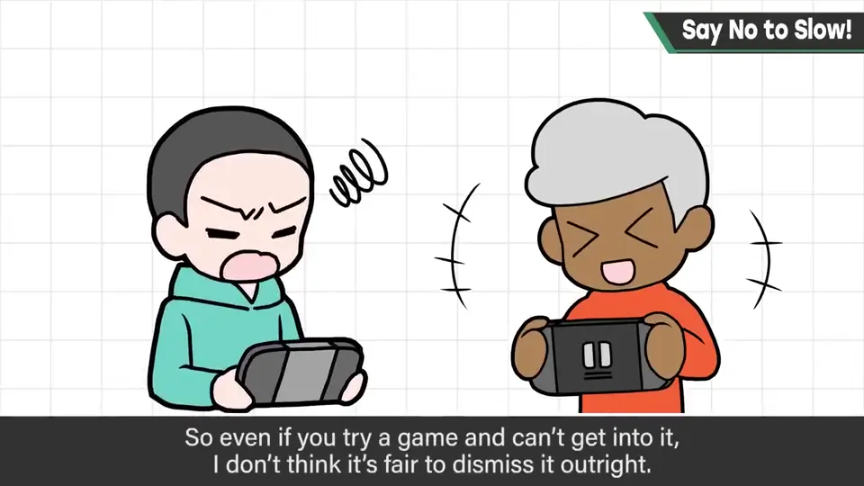
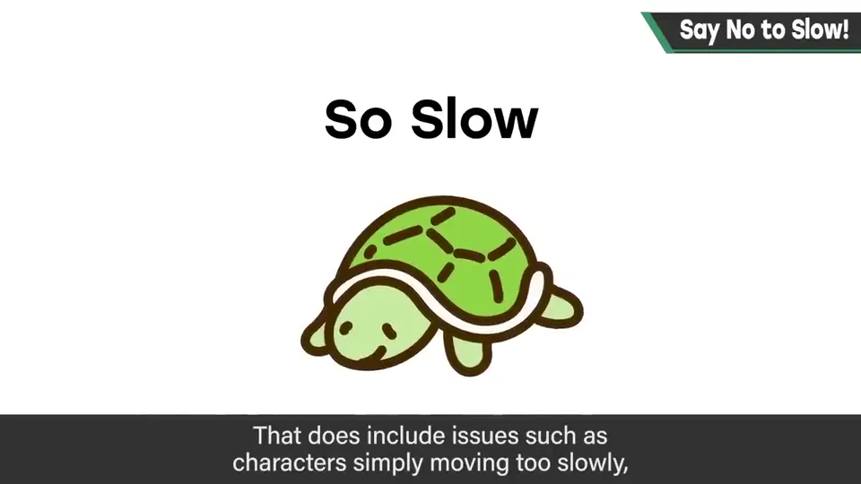
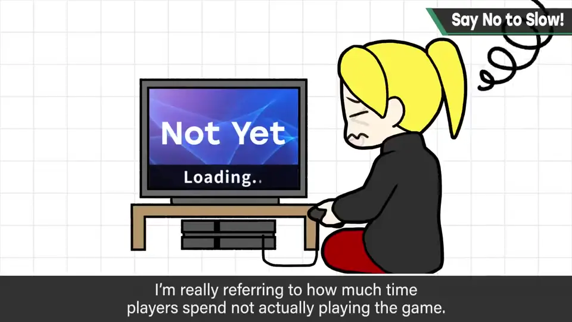
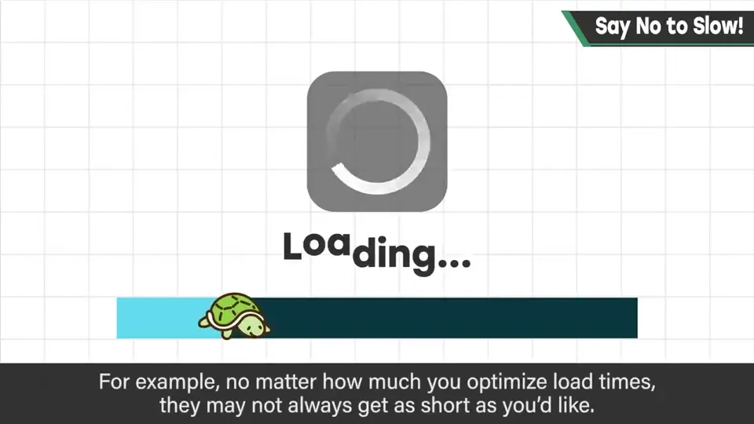
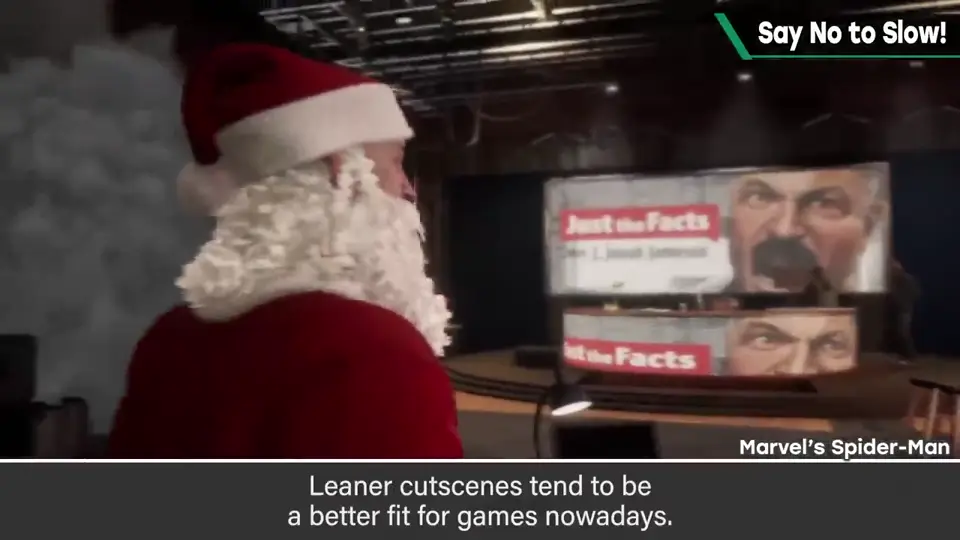
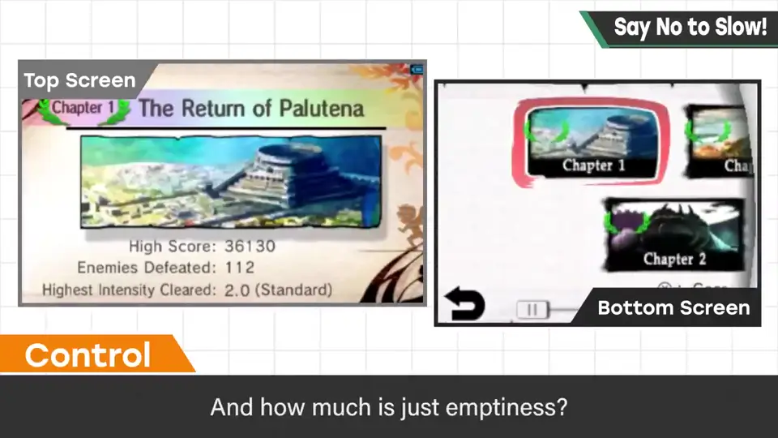
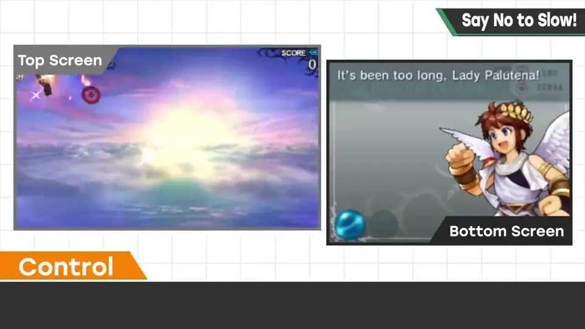
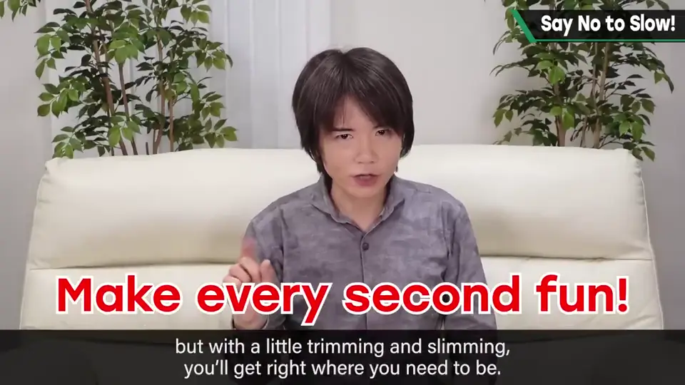

速览
各种游戏有各自的个性，喜欢哪部分、喜欢哪种游戏因人而异；所以自己玩着不觉得好玩，也不能一概否定——情人眼里出西施，有人的嫌弃是另一人的喜爱，想承认多样的价值观。但几乎唯一这一点不行、谁都爱不了：慢。单纯的移动速度慢也包括在内，但更是指做什么都花时间、什么都没做的时间长——表示有多少时间不在玩游戏。游戏里有想做的事、好玩的事，却让人等，最好认为这是非常糟糕的事。也许有吊胃口的技巧，但不太合时代；即便如此也不该拖拖拉拉。实际也有没办法的情况：读取时间怎么优化也可能缩不短；若把它想成「有人失误才要久等」只会烦躁。但能缩短的时间就压缩，为玩家提供更浓密的时间。影片或事件场景等让人喘口气的地方可以有——比起一直忙碌，有更好；但无谓的空白时间要压缩一点，更适合现代游戏。樱井制作游戏时会意识实际操作的时间：游戏启动的时间里，操作了多少、没操作多少、多少只是空白。没让玩家玩、没让人开心的时间，他真的觉得很抱歉。明知可能说过头还是要说：「慢是罪」。游戏体量很大的当下，演出也许需要，但稍微压缩一点正好。
1. 唯一谁都爱不了的东西 0:03
各种游戏都有个性：喜欢哪个部分、喜欢哪种游戏，因人而异。所以就算自己玩了觉得不好玩，也不能一概否定。有人的嫌弃是另一个人的喜爱，樱井想承认价值观的多样。


单纯移动速度慢也包括在内，但更是指做什么都花时间、什么都没在做的时间很长——也就是「有多少时间不在玩游戏」。

2. 能缩就缩 1:06
游戏里有想做的事、有好玩的事，却让玩家等待——最好认为这是非常糟糕的事。也许有「吊胃口」的技巧，但不太合时代；即便如此，也不能拖拖拉拉。
实际上也有没办法的情况：读取时间无论怎么优化都可能缩不短。把它想成「有人失误才害我久等」只会烦躁。


影片或事件场景等让人喘口气的地方可以有——比起一直忙碌，有反而更好。但无谓的空白时间要稍微压缩，这更适合现代游戏。
3. 意识实际操作时间 2:13
樱井制作游戏时会意识「游戏中操作的时间、实际时间」：在游戏启动的时间里，操作了多少、没在操作多少、多少只是空白。



没让玩家玩、没让玩家开心的时间，他真的觉得很抱歉。
自测题
1. 樱井说的「慢」主要指什么？
不只移动速度慢，更是做什么都花时间、什么都没在做的空白时间——玩家没在玩游戏的时间。 0:38
2. 无法缩短的读取时间该怎么看？其他时间呢？
读取有时优化不了；但能缩短的时间就要压缩，为玩家提供更浓密的时间。 1:24
3. 樱井在制作时会留意什么？
实际操作时间：启动后操作了多少、没操作多少、多少是空白。 2:13